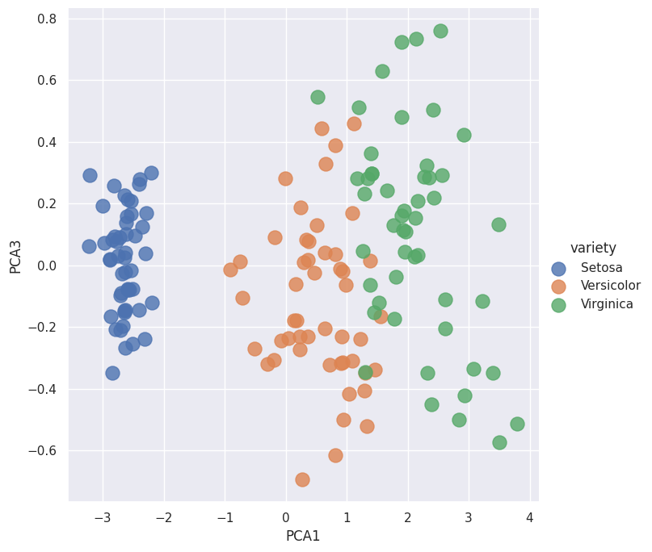
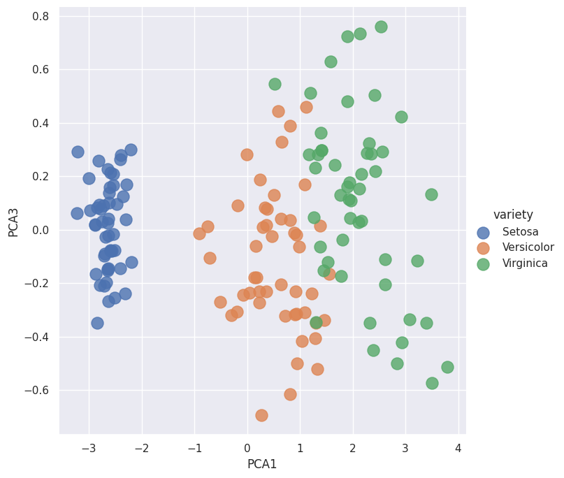

Principal Component Analysis: PCA#
import seaborn as sns
import pandas as pd
from sklearn.model_selection import train_test_split
import seaborn as sns: Pernyataan ini mengimpor pustaka seaborn, yang merupakan pustaka yang dibangun di atas matplotlib untuk visualisasi data statistik. Seaborn menyediakan antarmuka yang lebih sederhana dan lebih kuat untuk menghasilkan grafik yang indah dan informatif.
import pandas as pd: Pernyataan ini mengimpor pustaka pandas, yang merupakan pustaka populer untuk manipulasi dan analisis data. Pandas menyediakan struktur data tingkat tinggi, seperti DataFrame, yang memungkinkan Anda untuk dengan mudah memanipulasi, membersihkan, dan menganalisis data.
from sklearn.model_selection import train_test_split: Pernyataan ini mengimpor fungsi train_test_split dari modul model_selection dalam pustaka scikit-learn. train_test_split adalah fungsi yang berguna untuk membagi dataset menjadi subset pelatihan dan subset pengujian secara acak. Ini sangat berguna dalam evaluasi dan validasi model.
from google.colab import drive
drive.mount('/content/drive')
%cd /content/drive/MyDrive/Pendata
KeyboardInterruptTraceback (most recent call last)
<ipython-input-2-b30e20079f22> in <cell line: 2>()
1 from google.colab import drive
----> 2 drive.mount('/content/drive')
3 get_ipython().run_line_magic('cd', '/content/drive/MyDrive/Pendata')
/usr/local/lib/python3.10/dist-packages/google/colab/drive.py in mount(mountpoint, force_remount, timeout_ms, readonly)
101 def mount(mountpoint, force_remount=False, timeout_ms=120000, readonly=False):
102 """Mount your Google Drive at the specified mountpoint path."""
--> 103 return _mount(
104 mountpoint,
105 force_remount=force_remount,
/usr/local/lib/python3.10/dist-packages/google/colab/drive.py in _mount(mountpoint, force_remount, timeout_ms, ephemeral, readonly)
130 )
131 if ephemeral:
--> 132 _message.blocking_request(
133 'request_auth', request={'authType': 'dfs_ephemeral'}, timeout_sec=None
134 )
/usr/local/lib/python3.10/dist-packages/google/colab/_message.py in blocking_request(request_type, request, timeout_sec, parent)
174 request_type, request, parent=parent, expect_reply=True
175 )
--> 176 return read_reply_from_input(request_id, timeout_sec)
/usr/local/lib/python3.10/dist-packages/google/colab/_message.py in read_reply_from_input(message_id, timeout_sec)
94 reply = _read_next_input_message()
95 if reply == _NOT_READY or not isinstance(reply, dict):
---> 96 time.sleep(0.025)
97 continue
98 if (
KeyboardInterrupt:
from google.colab import drive: Pernyataan ini mengimpor pustaka google.colab yang memungkinkan akses ke fungsi khusus Colab, termasuk kemampuan untuk menghubungkan dan menggunakan Google Drive.
drive.mount(‘/content/drive’): Pernyataan ini memasang Google Drive Anda ke direktori ‘/content/drive’ di lingkungan Colab. Ini memerlukan otorisasi untuk mengakses Google Drive, dan Anda akan diminta untuk memasukkan kode otorisasi yang akan muncul. Setelah proses ini selesai, Anda dapat mengakses file yang ada di Google Drive Anda melalui direktori ‘/content/drive/MyDrive’.
iris = pd.read_csv('iris.csv')
X_iris = iris.drop('variety', axis=1)
y_iris = iris['variety']
iris = pd.read_csv(‘iris.csv’): Kode ini menggunakan fungsi read_csv dari pandas untuk membaca file CSV dengan nama ‘iris.csv’. Data dari file CSV tersebut disimpan dalam DataFrame yang disebut iris. DataFrame ini akan berisi semua kolom dan baris dari file CSV.
X_iris = iris.drop(‘variety’, axis=1): Kode ini menghasilkan DataFrame X_iris dengan menghapus kolom ‘variety’ dari DataFrame iris. axis=1 digunakan untuk menunjukkan bahwa kolom yang ingin dihapus, bukan baris. Dalam hal ini, X_iris akan berisi semua kolom kecuali kolom ‘variety’.
y_iris = iris[‘variety’]: Kode ini menghasilkan Series y_iris yang berisi nilai dari kolom ‘variety’ dalam DataFrame iris. y_iris akan menjadi target variabel yang ingin diprediksi atau diestimasi.
from sklearn.decomposition import PCA
model = PCA(n_components=2) # 2. Instantiate the model with hyperparameters
model.fit(X_iris) # 3. Fit to data. Notice y is not specified!
PCA(n_components=2)In a Jupyter environment, please rerun this cell to show the HTML representation or trust the notebook.
On GitHub, the HTML representation is unable to render, please try loading this page with nbviewer.org.
PCA(n_components=2)
from sklearn.decomposition import PCA: Pernyataan ini mengimpor kelas PCA dari modul decomposition dalam pustaka scikit-learn. PCA (Principal Component Analysis) adalah teknik reduksi dimensi yang digunakan untuk mengubah dataset menjadi representasi yang lebih rendah dimensinya.
model = PCA(n_components=2): Kode ini membuat objek model dari kelas PCA dengan mengatur n_components menjadi 2. Ini berarti kita ingin menghasilkan 2 komponen utama saat menggunakan PCA. Komponen utama ini akan digunakan untuk menggambarkan variasi dalam dataset dengan dimensi yang lebih rendah.
model.fit(X_iris): Kode ini memanggil metode fit pada objek model dan memasukkan X_iris sebagai argumennya. Metode fit digunakan untuk mempelajari pola dalam data X_iris dan mengestimasi komponen utama. Dalam hal ini, kita mempelajari pola dalam dataset iris untuk mengidentifikasi komponen utama yang menjelaskan variasi dalam data.
Perlu diperhatikan bahwa argumen y (variabel dependen) tidak dijelaskan dalam pemanggilan fit, karena PCA adalah metode unsupervised learning yang tidak memerlukan variabel dependen. PCA hanya menggunakan variabel independen (X_iris) untuk menghasilkan komponen utama.
print("check number of components", model.n_components_)
check number of components 2
code print(“check number of components”, model.n_components_) digunakan untuk mencetak jumlah komponen utama yang dihasilkan oleh model PCA. Properti n_components_ pada objek model PCA berisi jumlah komponen utama yang telah diestimasi berdasarkan data yang diberikan.
Transform the data#
X_2D = model.transform(X_iris) # 4. Transform the data to two dimenstions
X_2D = model.transform(X_iris): Kode ini menggunakan metode transform pada objek model untuk mentransformasikan data X_iris menjadi representasi dua dimensi. Metode transform mengambil data X_iris sebagai argumennya dan menghasilkan representasi dua dimensi dari data tersebut.
print("show first row of data", X_2D[0,:])
show first row of data [-2.68412563 0.31939725]
code print(“show first row of data”, X_2D[0,:]) digunakan untuk mencetak baris pertama dari data yang telah di-transformasi menjadi dua dimensi menggunakan PCA.
Dalam hal ini, X_2D adalah array dua dimensi yang berisi representasi dua dimensi dari data setelah dilakukan transformasi menggunakan model PCA. Dengan menggunakan indeks [0,:], kita memilih baris pertama dari array X_2D.
# transform each row of data
print(model.transform(X_iris.iloc[0, :].to_numpy().reshape(1, -1)))
[[-2.68412563 0.31939725]]
/usr/local/lib/python3.10/dist-packages/sklearn/base.py:439: UserWarning: X does not have valid feature names, but PCA was fitted with feature names
warnings.warn(
Code print(model.transform(X_iris.iloc[0, :].to_numpy().reshape(1, -1))) digunakan untuk mentransformasi setiap baris data secara terpisah menggunakan model PCA dan mencetak hasil transformasi.
Insert X_2D into the original Iris DataFrame#
iris['PCA1'] = X_2D[:,0]
iris['PCA2'] = X_2D[:,1]
Code iris[‘PCA1’] = X_2D[:,0] dan iris[‘PCA2’] = X_2D[:,1] digunakan untuk menambahkan dua kolom baru ke dalam DataFrame iris yang merupakan hasil dari transformasi PCA.
Dalam hal ini, X_2D adalah array dua dimensi yang berisi hasil transformasi PCA dari data. X_2D[:,0] dan X_2D[:,1] digunakan untuk memilih kolom pertama dan kedua dari array X_2D.
import seaborn as sns
sns.lmplot(x="PCA1", y="PCA2", hue='variety', data=iris, fit_reg=False, height=8, scatter_kws={"s": 150})
<seaborn.axisgrid.FacetGrid at 0x7f0c6a3aa050>

Code diatas menggunakan fungsi lmplot dari pustaka seaborn untuk membuat scatter plot dari kolom ‘PCA1’ dan ‘PCA2’ dalam DataFrame iris, dengan pengelompokan berdasarkan kolom ‘variety’.
Berikut adalah penjelasan untuk setiap argumen dalam fungsi lmplot:
x=”PCA1”: Menentukan kolom yang akan digunakan sebagai sumbu x dalam scatter plot.
y=”PCA2”: Menentukan kolom yang akan digunakan sebagai sumbu y dalam scatter plot.
hue=’variety’: Menentukan kolom yang akan digunakan untuk pengelompokan (hue) pada scatter plot, dalam hal ini kolom ‘variety’.
data=iris: Menentukan DataFrame yang akan digunakan sebagai sumber data untuk scatter plot, dalam hal ini DataFrame iris.
fit_reg=False: Menentukan apakah garis regresi akan ditampilkan atau tidak. Dalam hal ini, fit_reg diatur sebagai False, yang berarti tidak ada garis regresi yang ditampilkan.
height=8: Menentukan tinggi (height) dari scatter plot dalam satuan yang ditentukan. Dalam hal ini, tinggi scatter plot diatur sebagai 8.
scatter_kws={“s”: 150}: Menentukan parameter tambahan untuk scatter plot. Dalam hal ini, kita menggunakan scatter_kws untuk mengatur ukuran titik-titik pada scatter plot menjadi 150.
Change number of components#
from sklearn.decomposition import PCA
model = PCA(n_components=4) # 2. Instantiate the model with hyperparameters
model.fit(X_iris) # 3. Fit to data. Notice y is not specified!
X_2D = model.transform(X_iris) # 4. Transform the data to two dimenstions
Code diatas menggunakan pustaka scikit-learn untuk menerapkan PCA (Principal Component Analysis) pada data iris. Berikut adalah penjelasan langkah-langkah dalam kode tersebut:
from sklearn.decomposition import PCA: Baris ini mengimport kelas PCA dari pustaka scikit-learn, yang digunakan untuk menerapkan analisis komponen utama (PCA).
model = PCA(n_components=4): Pada langkah ini, objek model PCA dibuat dengan argumen n_components=4. Argumen ini menentukan jumlah komponen utama yang ingin dihasilkan dari PCA. Dalam kasus ini, Anda mengatur jumlah komponen utama menjadi 4.
model.fit(X_iris): Langkah ini mengambil data X_iris dan menggunakan metode fit pada objek model untuk melatih model PCA. Dalam hal ini, model PCA akan mempelajari struktur data iris dan mengestimasi komponen utama berdasarkan data tersebut. Perlu diperhatikan bahwa argumen y tidak ditentukan dalam pemanggilan metode fit, yang berarti PCA dilakukan hanya pada fitur-fitur X_iris tanpa memperhatikan variabel target.
X_2D = model.transform(X_iris): Pada langkah ini, metode transform pada objek model digunakan untuk mentransformasikan data X_iris menjadi representasi dua dimensi menggunakan komponen utama yang telah diestimasi sebelumnya. Representasi dua dimensi ini disimpan dalam variabel X_2D.
Dengan menjalankan kode ini, kita dapat melatih model PCA dengan data X_iris dan menghasilkan representasi dua dimensi dari data tersebut menggunakan empat komponen utama. Representasi ini disimpan dalam variabel X_2D.
ในกรณีนี้ไม่สามารถกำหนด n_components ให้มากกว่า 4 ได้ เนื่องจาก Iris dataset มีจำนวน feature จำนวนเพียง 4 ค่า
from sklearn.decomposition import PCA
model = PCA(n_components=3) # 2. Instantiate the model with hyperparameters
model.fit(X_iris) # 3. Fit to data. Notice y is not specified!
X_2D = model.transform(X_iris) # 4. Transform the data to two dimenstions
iris['PCA1'] = X_2D[:,0]
iris['PCA2'] = X_2D[:,1]
iris['PCA3'] = X_2D[:,2]
Code diatas melakukan PCA pada data iris dengan menggunakan tiga komponen utama. Setelah melakukan transformasi PCA, hasil transformasi tersebut disimpan dalam tiga kolom baru ‘PCA1’, ‘PCA2’, dan ‘PCA3’ dalam DataFrame iris.
Pada baris pertama, from sklearn.decomposition import PCA digunakan untuk mengimport kelas PCA dari pustaka scikit-learn.
Selanjutnya, pada baris kedua, model = PCA(n_components=3) menginisialisasi objek model PCA dengan tiga komponen utama.
Pada baris ketiga, model.fit(X_iris) dilakukan untuk melatih model PCA dengan data X_iris. Perlu diperhatikan bahwa argumen y tidak diberikan, sehingga model PCA akan melatih data hanya dengan fitur-fitur X_iris.
Pada baris keempat, X_2D = model.transform(X_iris) digunakan untuk mentransformasikan data X_iris menjadi representasi tiga dimensi menggunakan tiga komponen utama yang telah diestimasi sebelumnya.
Terakhir, pada baris-baris kelima hingga ketujuh, kolom-kolom baru ‘PCA1’, ‘PCA2’, dan ‘PCA3’ ditambahkan ke DataFrame iris dengan menggunakan hasil transformasi X_2D yang sesuai dengan komponen utama yang dipilih.
Dengan menjalankan code ini, kita akan mendapatkan DataFrame iris yang telah ditambahkan dengan tiga kolom baru ‘PCA1’, ‘PCA2’, dan ‘PCA3’ yang mewakili hasil transformasi PCA dari data iris.
#melihat beberapa baris pertama dari DataFrame iris setelah penambahan kolom PCA
iris.head()
| sepal.length | sepal.width | petal.length | petal.width | variety | PCA1 | PCA2 | PCA3 | |
|---|---|---|---|---|---|---|---|---|
| 0 | 5.1 | 3.5 | 1.4 | 0.2 | Setosa | -2.684126 | 0.319397 | -0.027915 |
| 1 | 4.9 | 3.0 | 1.4 | 0.2 | Setosa | -2.714142 | -0.177001 | -0.210464 |
| 2 | 4.7 | 3.2 | 1.3 | 0.2 | Setosa | -2.888991 | -0.144949 | 0.017900 |
| 3 | 4.6 | 3.1 | 1.5 | 0.2 | Setosa | -2.745343 | -0.318299 | 0.031559 |
| 4 | 5.0 | 3.6 | 1.4 | 0.2 | Setosa | -2.728717 | 0.326755 | 0.090079 |
import seaborn as sns
sns.set()
sns.lmplot(x="PCA1", y="PCA2", hue='variety', data=iris, fit_reg=False, height=7, scatter_kws={"s": 150});
sns.lmplot(x="PCA1", y="PCA3", hue='variety', data=iris, fit_reg=False, height=7, scatter_kws={"s": 150});
sns.lmplot(x="PCA2", y="PCA3", hue='variety', data=iris, fit_reg=False, height=7, scatter_kws={"s": 150});
 

Code diatas menggunakan fungsi lmplot dari pustaka seaborn untuk membuat scatter plot dari kombinasi kolom PCA yang berbeda dalam DataFrame iris, dengan pengelompokan berdasarkan kolom ‘variety’.
Pada baris pertama, sns.lmplot digunakan untuk membuat scatter plot dari kolom ‘PCA1’ dan ‘PCA2’, dengan pengelompokan berdasarkan kolom ‘variety’. Argumen x dan y digunakan untuk menentukan kolom yang akan digunakan sebagai sumbu x dan y. hue=’variety’ menentukan kolom yang akan digunakan untuk pengelompokan. data=iris menunjukkan bahwa data yang digunakan berasal dari DataFrame iris. fit_reg=False digunakan untuk menonaktifkan garis regresi. height=7 mengatur tinggi (height) dari scatter plot menjadi 7. scatter_kws={“s”: 150} digunakan untuk mengatur ukuran titik-titik pada scatter plot menjadi 150.
Baris kedua dan ketiga memiliki struktur yang serupa, tetapi menggunakan kombinasi kolom PCA yang berbeda. Baris kedua membuat scatter plot dari kolom ‘PCA1’ dan ‘PCA3’, sedangkan baris ketiga membuat scatter plot dari kolom ‘PCA2’ dan ‘PCA3’.
Dengan menjalankan code ini, Kita akan menghasilkan tiga scatter plot yang menampilkan hubungan antara kombinasi kolom PCA dalam DataFrame iris. Setiap scatter plot akan memperlihatkan pengelompokan berdasarkan kolom ‘variety’, dengan warna yang berbeda untuk setiap jenis variety.
Training new features using Naive Bayes#
iris.head()
| sepal.length | sepal.width | petal.length | petal.width | variety | PCA1 | PCA2 | PCA3 | |
|---|---|---|---|---|---|---|---|---|
| 0 | 5.1 | 3.5 | 1.4 | 0.2 | Setosa | -2.684126 | 0.319397 | -0.027915 |
| 1 | 4.9 | 3.0 | 1.4 | 0.2 | Setosa | -2.714142 | -0.177001 | -0.210464 |
| 2 | 4.7 | 3.2 | 1.3 | 0.2 | Setosa | -2.888991 | -0.144949 | 0.017900 |
| 3 | 4.6 | 3.1 | 1.5 | 0.2 | Setosa | -2.745343 | -0.318299 | 0.031559 |
| 4 | 5.0 | 3.6 | 1.4 | 0.2 | Setosa | -2.728717 | 0.326755 | 0.090079 |
from sklearn.model_selection import train_test_split
X_iris = iris.drop('variety', axis=1)
y_iris = iris['variety']
Xtrain, Xtest, ytrain, ytest = train_test_split(X_iris, y_iris, random_state=1)
CPada code diatas, train_test_split dari pustaka scikit-learn digunakan untuk membagi data X_iris dan y_iris menjadi data latih (Xtrain dan ytrain) serta data uji (Xtest dan ytest).
Pada baris pertama, X_iris diinisialisasi dengan menghapus kolom ‘variety’ dari DataFrame iris menggunakan metode drop dengan argumen axis=1. Ini akan menghasilkan DataFrame yang hanya berisi fitur-fitur dari data iris.
Pada baris kedua, y_iris diinisialisasi dengan kolom ‘variety’ dari DataFrame iris. Ini akan menghasilkan Series yang berisi label atau target dari data iris.
Pada baris ketiga, train_test_split digunakan untuk membagi data X_iris dan y_iris menjadi data latih dan data uji. Argumen X_iris dan y_iris adalah data yang akan dibagi. random_state=1 digunakan untuk mengatur seed yang digunakan dalam proses pemilihan data secara acak, sehingga pemisahan data akan bersifat deterministik.
Hasil dari pemisahan data akan disimpan dalam variabel Xtrain, Xtest, ytrain, dan ytest, yang akan digunakan dalam langkah-langkah selanjutnya dalam pemodelan atau evaluasi model machine learning.
#Untuk melihat beberapa baris pertama dari data latih (Xtrain)
Xtrain.head()
| sepal_length | sepal_width | petal_length | petal_width | PCA1 | PCA2 | PCA3 | |
|---|---|---|---|---|---|---|---|
| 54 | 6.5 | 2.8 | 4.6 | 1.5 | 1.088103 | 0.074591 | -0.307758 |
| 108 | 6.7 | 2.5 | 5.8 | 1.8 | 2.321229 | -0.243832 | -0.348304 |
| 112 | 6.8 | 3.0 | 5.5 | 2.1 | 2.165592 | 0.216276 | 0.033327 |
| 17 | 5.1 | 3.5 | 1.4 | 0.3 | -2.648297 | 0.311849 | 0.026668 |
| 119 | 6.0 | 2.2 | 5.0 | 1.5 | 1.300792 | -0.761150 | -0.344995 |
#Untuk melihat beberapa baris pertama dari data latih (ytrain)
ytrain.head()
54 Versicolor
108 Virginica
112 Virginica
17 Setosa
119 Virginica
Name: variety, dtype: object
Xtrain = Xtrain.loc[:,['PCA1','PCA2','PCA3']]
Xtrain.head()
| PCA1 | PCA2 | PCA3 | |
|---|---|---|---|
| 54 | 1.088103 | 0.074591 | -0.307758 |
| 108 | 2.321229 | -0.243832 | -0.348304 |
| 112 | 2.165592 | 0.216276 | 0.033327 |
| 17 | -2.648297 | 0.311849 | 0.026668 |
| 119 | 1.300792 | -0.761150 | -0.344995 |
Setelah melakukan pemilihan kolom pada DataFrame Xtrain menggunakan metode loc dengan argumen [:, [‘PCA1’, ‘PCA2’, ‘PCA3’]], Kita dapat menggunakan metode head() untuk melihat beberapa baris pertama dari DataFrame Xtrain yang telah mengandung kolom-kolom yang dipilih.
Xtest = Xtest.loc[:,['PCA1','PCA2','PCA3']]
Xtest.head()
| PCA1 | PCA2 | PCA3 | |
|---|---|---|---|
| 14 | -2.644750 | 1.178765 | -0.151628 |
| 98 | -0.906470 | -0.756093 | -0.012600 |
| 75 | 0.900174 | 0.328504 | -0.316209 |
| 16 | -2.623528 | 0.810680 | 0.138183 |
| 131 | 3.230674 | 1.374165 | -0.114548 |
Setelah melakukan pemilihan kolom pada DataFrame Xtest menggunakan metode loc dengan argumen [:, [‘PCA1’, ‘PCA2’, ‘PCA3’]], Kita dapat menggunakan metode head() untuk melihat beberapa baris pertama dari DataFrame Xtrain yang telah mengandung kolom-kolom yang dipilih.
from sklearn.naive_bayes import GaussianNB # 1. choose model class
model = GaussianNB() # 2. instantiate model
model.fit(Xtrain, ytrain) # 3. fit model to data
GaussianNB()In a Jupyter environment, please rerun this cell to show the HTML representation or trust the notebook.
On GitHub, the HTML representation is unable to render, please try loading this page with nbviewer.org.
GaussianNB()
Pada code diatas menggunakan algoritma Naive Bayes dengan menggunakan kelas GaussianNB dari pustaka scikit-learn.
Pada baris pertama, GaussianNB diimpor dari modul sklearn.naive_bayes. Ini adalah kelas yang mewakili model Naive Bayes dengan distribusi Gaussian.
Pada baris kedua, model Naive Bayes dengan distribusi Gaussian diinstansiasi menggunakan GaussianNB(). Anda dapat menggunakan parameter default untuk model ini atau menyesuaikan parameter sesuai kebutuhan.
Pada baris ketiga, model tersebut dilatih dengan memanggil metode fit(Xtrain, ytrain) pada model. Ini akan melakukan pelatihan model menggunakan data latih Xtrain dan ytrain. Model akan belajar untuk menyesuaikan diri dengan pola yang ada dalam data untuk melakukan klasifikasi.
Setelah langkah ini, model Naive Bayes dengan distribusi Gaussian telah dipelajari dari data latih dan siap digunakan untuk melakukan prediksi pada data uji atau data baru.
y_model = model.predict(Xtest)
Pada diatas menggunakan model Naive Bayes yang telah dilatih (model) untuk melakukan prediksi pada data uji (Xtest), dan hasil prediksinya disimpan dalam variabel y_model.
Untuk melakukan prediksi, Anda menggunakan metode predict(Xtest) pada model. Metode ini akan memprediksi label atau kelas untuk setiap sampel dalam Xtest berdasarkan pembelajaran yang dilakukan pada data latih. Hasil prediksi akan menjadi array yang berisi label prediksi untuk setiap sampel dalam Xtest.
Setelah kode tersebut dieksekusi, variabel y_model akan berisi prediksi yang dihasilkan oleh model Naive Bayes untuk data uji Xtest.
from sklearn.metrics import accuracy_score
accuracy_score(ytest, y_model)
0.9473684210526315
Pada diatas menggunakan fungsi accuracy_score dari modul sklearn.metrics untuk menghitung akurasi prediksi model Naive Bayes.
Fungsi accuracy_score digunakan untuk mengukur akurasi atau tingkat keakuratan prediksi. Anda perlu menyediakan dua argumen: ytest, yaitu label sebenarnya dari data uji, dan y_model, yaitu label yang diprediksi oleh model untuk data uji.
Dengan memanggil accuracy_score(ytest, y_model), fungsi akan membandingkan label sebenarnya (ytest) dengan label yang diprediksi oleh model (y_model) dan menghitung persentase keakuratan prediksi.
Hasilnya adalah nilai akurasi, yang merupakan proporsi dari sampel-sampel dalam data uji yang diprediksi dengan benar oleh model.
from sklearn.metrics import confusion_matrix
mat = confusion_matrix(ytest, y_model)
Pada code diatas menggunakan fungsi confusion_matrix dari modul sklearn.metrics untuk menghitung matriks konfusi antara label sebenarnya (ytest) dan label yang diprediksi oleh model (y_model).
Matriks konfusi adalah tabel persegi yang digunakan untuk menggambarkan performa model klasifikasi. Pada sumbu horizontal matriks konfusi, kita memiliki label yang diprediksi oleh model, sedangkan pada sumbu vertikal, kita memiliki label sebenarnya. Setiap sel dalam matriks konfusi menunjukkan jumlah sampel yang diprediksi dengan suatu label tertentu (baris) oleh model, sedangkan label sebenarnya adalah label lainnya (kolom).
Dengan memanggil confusion_matrix(ytest, y_model), fungsi akan menghitung matriks konfusi berdasarkan label sebenarnya (ytest) dan label yang diprediksi oleh model (y_model).
Hasilnya adalah matriks konfusi yang berbentuk array, di mana setiap elemen mewakili jumlah sampel yang termasuk dalam kategori tertentu berdasarkan prediksi model dan label sebenarnya.
import matplotlib.pyplot as plt
sns.heatmap(mat.T, square=True, annot=True, fmt='d', cbar=False, cmap='viridis',
xticklabels=['setosa', 'versicolor', 'virginica'], yticklabels=['setosa', 'versicolor', 'virginica'])
plt.title('Confusion matrix')
plt.xlabel('true label')
plt.ylabel('predicted label');
plt.show()
Pada code diatas menggunakan modul matplotlib.pyplot untuk membuat visualisasi matriks konfusi dalam bentuk heatmap.
Pertama, sns.heatmap(mat.T, square=True, annot=True, fmt=’d’, cbar=False, cmap=’viridis’, xticklabels=[‘setosa’, ‘versicolor’, ‘virginica’], yticklabels=[‘setosa’, ‘versicolor’, ‘virginica’]) digunakan untuk membuat heatmap matriks konfusi. Fungsi heatmap dari modul seaborn digunakan untuk membuat visualisasi heatmap berdasarkan matriks konfusi mat. Argumen mat.T digunakan untuk mentranspose matriks konfusi agar sumbu x dan y sesuai dengan label yang dimaksud. Argumen square=True digunakan untuk membuat kotak persegi pada heatmap. Argumen annot=True digunakan untuk menampilkan angka pada setiap sel heatmap. Argumen fmt=’d’ digunakan untuk menampilkan angka dalam format bilangan bulat. Argumen cbar=False digunakan untuk menghilangkan color bar pada heatmap. Argumen cmap=’viridis’ digunakan untuk menentukan skema warna heatmap. Argumen xticklabels=[‘setosa’, ‘versicolor’, ‘virginica’] dan yticklabels=[‘setosa’, ‘versicolor’, ‘virginica’] digunakan untuk menentukan label pada sumbu x dan y.
Selanjutnya, plt.title(‘Confusion matrix’) digunakan untuk memberikan judul pada plot. plt.xlabel(‘true label’) digunakan untuk memberikan label pada sumbu x. plt.ylabel(‘predicted label’) digunakan untuk memberikan label pada sumbu y. plt.show() digunakan untuk menampilkan plot heatmap.
Dengan kode tersebut, Anda akan mendapatkan visualisasi heatmap matriks konfusi yang memberikan informasi tentang klasifikasi yang dilakukan oleh model Naive Bayes.